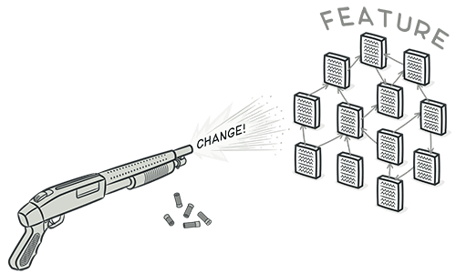

Change Preventer
Divergent Change
Divergent change adalah suatu indikasi pada kode yang terjadi ketika sebuah kelas sering dimodifikasi karena berbagai alasan yang berbeda, yang memerlukan perubahan pada banyak metode yang tidak terkait di dalam kelas tersebut. Hal ini dapat menyebabkan kesalahan saat perubahan dilakukan yang tidak diharapkan oleh kelas, dan membatasi seberapa cepat perubahan dapat dilakukan pada kode.
Before
After
Shotgun Surgery
Mirip dengan Divergent Change, namun dengan cakupan yang lebih luas, gejala aroma Shotgun Surgery pada kode terdeteksi oleh kebutuhan yang tidak perlu untuk mengubah beberapa kelas yang berbeda untuk memperkenalkan satu modifikasi tunggal.
Before
After
Parallel Inheritance Hierarchies
Parallel Inheritance Hierarchies adalah aroma kode yang terjadi ketika dua hierarki kelas atau objek yang sejajar perlu berkembang bersama-sama. Hal ini dapat terjadi ketika tree pewarisan bergantung pada tree pewarisan lain melalui komposisi, dan salah satu subkelas dari pewarisan yang bergantung harus bergantung pada satu subkelas dari pewarisan lain.
Before
After
Referensi
Refactoring Guru: https://refactoring.guru/refactoring/smells/change-preventers